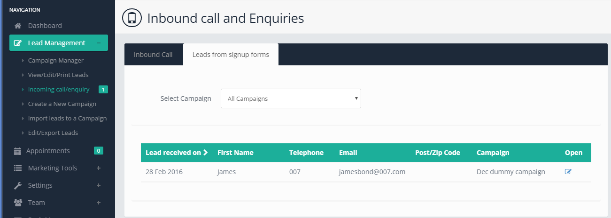
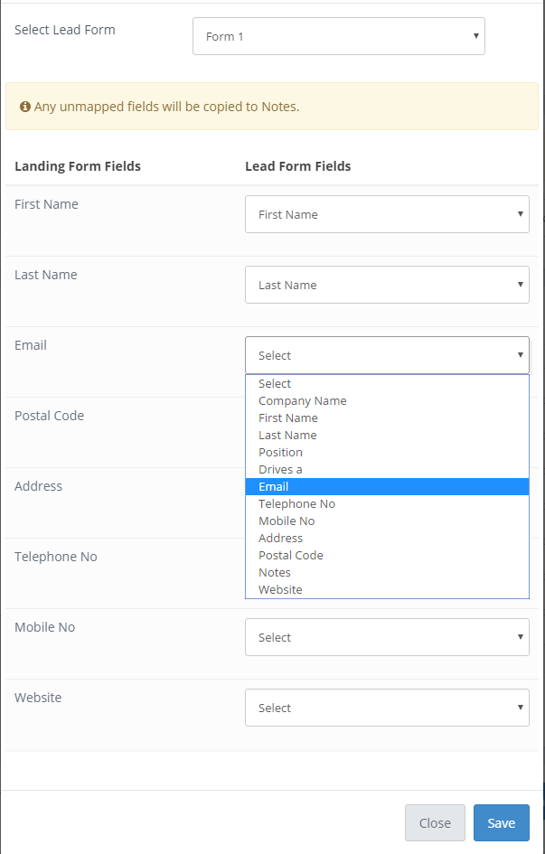
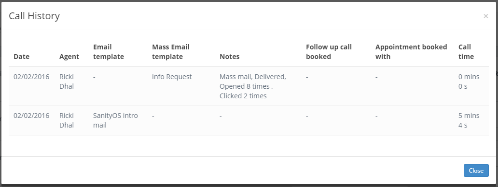

Help Guides & Tutorials
An overview of how to use Sanity OS
An overview of how to use Sanity OS

Thank you for choosing Sanity OS as your lead management system. To help you to get the most out of your this handy piece of software below is a beginners guide to getting started which includes videos guides and examples with images. If you need any further help you'll be able to find the contact details for support here too.
Step 1, Creating Forms:
Before you start a campaign or import data you should create a customised Lead form.
Step 2, Create an Email template:
Have you ever been on a call to a prospect and asked for more information? Sanity OS lets you create and store email templates for such occasions so when you're on a call in the SOS environment you can select the template and send it straight to a customer without leaving the screen.
Step 3, Create a campaign:
Before you can start calling customers and recording data you need to create a campaign. Campaigns can be named after a product you're promoting, a service or an entire business. When you create a campaign you can import contacts or leads in to the database or choose to type them as you go along.
Step 4, Ready to Go!:
You've now completed most of the things you need to start using Sanity OS. When you want to want to begin calling people from your campaign select start call manager and click the applicable campaign.
Want to learn everything you need to get you going in Sanity OS? No problems, Check out the Getting Started video below. We're pretty sure once you watch the entire clip you'll be able to do most things in Sanity OS yourself.

To ensure the most optimal delivery rates and to avoid your email's ending up in spam folders. Sanity OS Provides you with two methods:

All Done! You can now be assured that emails will be delivered to your customers as if they were sent from your own mailbox.
Sanity OS allows you to build custom forms to match your call/campaign criteria needs. To put it simply any data you import or record when talking to prospects should be on this form. Examples of this are First Name, Last Name, Website, Email and so on...
To build a form follow these simple steps:
1. From the main menu select Campaign Manager
2. Select Manage Lead Forms
3. The options on the Left (highlighted in red below) are a choice of fields for you to use in your form. As each option is selected you will notice its added to a box on the right.

4. If you want to add a custom field or even a drop menu with multiple options simply click "Add New Field".
5. You can drag the columns in order of priority using the box to the right. The height you place them in will be the order the options appear on your actual form.

6. Give your form a name
7. Click Preview to see what your form will look like or simply press save to continue
8. You will notice a checkbox besides the 'X'/delete button when you add a new field. Ticking the checkbox enables validation of that field. This means when its enabled the user will need to complete it before they can load another lead.
Sanitys OS does something that no other application in it's class allows you to do with ease. You can create your own Web forms to embed on to any website you like! Whenever a Web form is completed the data passed to Sanity OS and your staff will be alerted of the new lead that requires action.
Simple, Follow the steps bellow:
Step 1) Click Inbound Leads from the Lead management menu.
Step 2) Click the button that says Manage Web Forms.
Step 3) Use the predefined options on the left (just like when creating a Lead form) to begin adding fields to your form, adding additional input entries when needed.
Step 4) Use the "Extra's button" to add your own logo and Thank you message after your forms complete.
Step 5) When you create your campaign OR if your associating this to to an existing campaign you will have an option to Map Form, click it. You will now be asked to Map what fields of data land in to your lead forms for example First name would obviously be mapped to First name on your lead form. Any unmapped fields will be entered as notes.

That's it, When your form is saved you will be provided with a unique landing page address and Embed code incase you want to place it within your own website.
What is an inbound enquiry?
You're promoting a new product or perhaps your campaign is monitoring leads from an external advertising source. So what happens when a potential prospect calls in or you get a Lead via your webform? How do you handle them?
In this guide we'll show you just how easy this is to do in Sanity OS.
Does the contact already exist as a prospect in your campaign?
If the answer is yes, Follow these simple instructions to opening their profile:
1) Select inbound call/inquiry from the main menu
2) Select the campaign the prospect is ringing in relation to from the drop down menu
3) Select a search method you wish to use to find them from the drop menu
4) Press the search button and select the result to open the lead profile, then just click open to open their contact information and notes page.
The inbound call relates to a new prospect, not currently in the system.
1) Select inbound call/inquiry from the main menu
2) From the drop down options select the campaign you wish to apply the prospects information in to
3) Check the box that say's "New Customer"
4) You can now simply add their details in to Sanity OS in the lead form page.
The inbound lead has come via our web/contact form
1) You will be notified by email whenever a weblead is filled in.
2) From the Main Menu click Lead Management you will see a number next to the inbound enquiries section, this represent how many leads are pending contact since they filled in your web/contact form.
3) Click Inbound leads/enquiries from the menu and select the tab that says Leads from Signup Forms
4) Click open to view the lead information.
Email templates are an easy way of getting your message across to a customer when they ask for it. During important calls to prospects agents are always asked to "send more information".
Rather than minimizing windows, opening up other email services and typing a new email to their prospect there is now a much easier way!Sanity OS allows you to send emails in one simple environment. It's easy! Pre-draft an email for your agents to use so they can seamlessly send information on demand during calls. Lets Learn How:
Step 1, Click Marketing tools in the menu, then select More Info Emails
Step 2, Select "Create new"
Give your email template a name so you OR your agents can quickly identify it.
Step 3, Create the email
Give your email a subject and write the content of the message in the provided body section.
You can import images and add attachments to send with the email such as brochures or whitepapers.
Step 4, Address the email (Optional)
Sanity OS allows you to address the email when its sent to the prospect by using the "form fields". So when the template is selected and sent it will be addressed to the person your agent is speaking to. EXAMPLE: After typing "Dear" in the email body select "First Name" from below and it will address the email to the first name

That's it!
Click preview or save the template. You can create as many templates as you need and edit them whenever you like and they will be available to use during conversations whilst you are on the lead form page.
The idea of creating a campaign can vary for business to business. A typical scenario would be to create a campaign in order to upload Data you have obtained so that your agents can ring around and warm up prospects. Some organisations import their contacts and use the campaign to contact them about new products or services whereas some may name a campaign after a particular client they may be working on behalf of. In order to begin using Sanity OS you must create a campaign, if you don't have data or contacts to import don't worry you can do that later and create a "Fly Campaign".
Step 1, Click the Lead management tab, select "Campaign Manager" then Click Create a new campaign.
Step 2, Give your campaign a name
Name your campaign and if you're a multi license user you can choose which members in your team can access the campaign.
Step 3, Select a form that is applicable to your campaign.
This will be the form you designed previously. If you haven't made one you can use the Default Form.
Step 4, Auto-generate Reference numbers
Reference numbers are complete optional but if you'd like to use them then Sanity OS can create them for you. You can also add a prefix to each reference number like an abbreviation of your company name.
Step 5, Press Next and import your leads!
You can import leads very easily using a CSV file or by copying and pasting from Excel in to the body provided.
"BUT WAIT... I DON'T HAVE ANYTHING TO IMPORT?" No problems, select "I don't Have either of the above". Click Next.
You're all done! and ready to start making your calls.
Sanity OS will show you an overview of the data imported and remove any duplicates.
Then Click the Start call manager button from the Lead Management menu to begin.
Want to see how? Watch our Getting Started Video

Sending Marketing Emails to your Leads.
Important:Sanity OS scores the quality of the content sent in Emails. High Bounce Rates along with poorly sent content is considered as spamming. This may lead to your account being suspended our your email credits being removed.
Sending Mass Emails are a great way to warm up prospects before contacting them or to remind them of an offer or product that you may be promoting.
To start your E-marketing process in Sanity OS follow the steps bellow:
Note: Please ensure you have added your Email Sending Providers Credentials under Mass Email Settings before proceeding
Step 1) Click Marketing Tools in the Main Menu, Then select Email Tools & Templates
Step 2) Select the option for Mass Email Campaign
Step 3) Select Create New Template
Step 4) Enter who you want the email to appear from and what you would like the reply address be.
Step 5) Select a campaign, If its a campaign you've already started to work on you can use the targeting options to allow for further send preferences.
Step 6) Enter a subject line and input the information of your mailer in to the Email Body.
Step 7) Click send, preview or schedule your email.
That's it! You've just sent a targeted email to your leads, View the open rates in the reports section.
You can also look at open rates in call history on the lead page by clicking the Lead History button located at the top of the page or by clicking notes under view/edit/print leads

In Sanity OS you get a Limited volume of emails that are included with your account that can be used for marketing. You will notice at the top of the mass email marketing page there will be Email credits. We allow you to add your own mass mail server such as Mandril or Sendgrind to unlock unlimited sending To do this simply click on the Mass mail server button and enter your email server information.
You can revist, update, edit, export or print leads in Sanity OS anytime. After all, your leads may need further nuturing and additional contact before they can be qualified.
Step 1) Click Lead management in the main menu, then select View/Edit/Print Leads
Step 2) Use the filters to select the criteria of leads you wish to view (for example, this could be slecting Positive Leads from the drop menu to display all positive leads). You can apply additional filtering such as calls made within a period of time or by using smart filters which let you filter leads by any variable you choose.
Step 3) Once your leads have been select click the one you wish to action to open it OR BY Simply clicking on the notes in the notes field you can bring up a call history snapshot before opening it.
Step 4) Use the "Extra's button" to add your own logo and "Thank you message" which will appear after someone fills out your form.
Awesome Extra's:
Want to export your lead as a PDF? no wories select it using the checkbox and use the drop menu with options to save it as a PDF. You can also save multiple leads as PDF's in clean readable format as a single document by using the checkbox to include additional leads.
Leads can be printed in readable format! Using the same method above, check the boxes of the leads you wish to print then select Print Leads from the drop menu.
What is an inbound enquiry?
You're promoting a new product or perhaps your campaign is monitoring leads from an external advertising source. So what happens when a potential prospect calls in or you get a Lead via your webform? How do you handle them?
In this guide we'll show you just how easy this is to do in Sanity OS.
Does the contact already exist as a prospect in your campaign?
If the answer is yes, Follow these simple instructions to opening their profile:
1) Select inbound call/inquiry from the main menu
2) Select the campaign the prospect is ringing in relation to from the drop down menu
3) Select a search method you wish to use to find them from the drop menu
4) Press the search button and select the result to open the lead profile, then just click open to open their contact information and notes page.
The inbound call relates to a new prospect, not currently in the system.
1) Select inbound call/inquiry from the main menu
2) From the drop down options select the campaign you wish to apply the prospects information in to
3) Check the box that say's "New Customer"
4) You can now simply add their details in to Sanity OS in the lead form page.
The inbound lead has come via our web/contact form
1) You will be notified by email whenever a weblead is filled in.
2) From the Main Menu click Lead Management you will see a number next to the inbound enquiries section, this represent how many leads are pending contact since they filled in your web/contact form.
3) Click Inbound leads/enquiries from the menu and select the tab that says Leads from Signup Forms
4) Click open to view the lead information.
Sanity OS is compatible with Soft Phones and VOIP solutions that are compatable with the "call-to protocol". You can use Sanity OS as a dialler to dial the numbers for you either on queue as a power dialler or using a dial button. These options can be configured under the "My Account" Section.
Sanity OS Preview and Power Dialing functionality